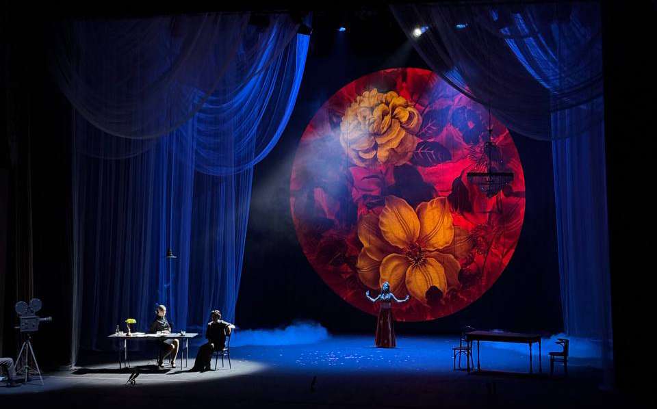
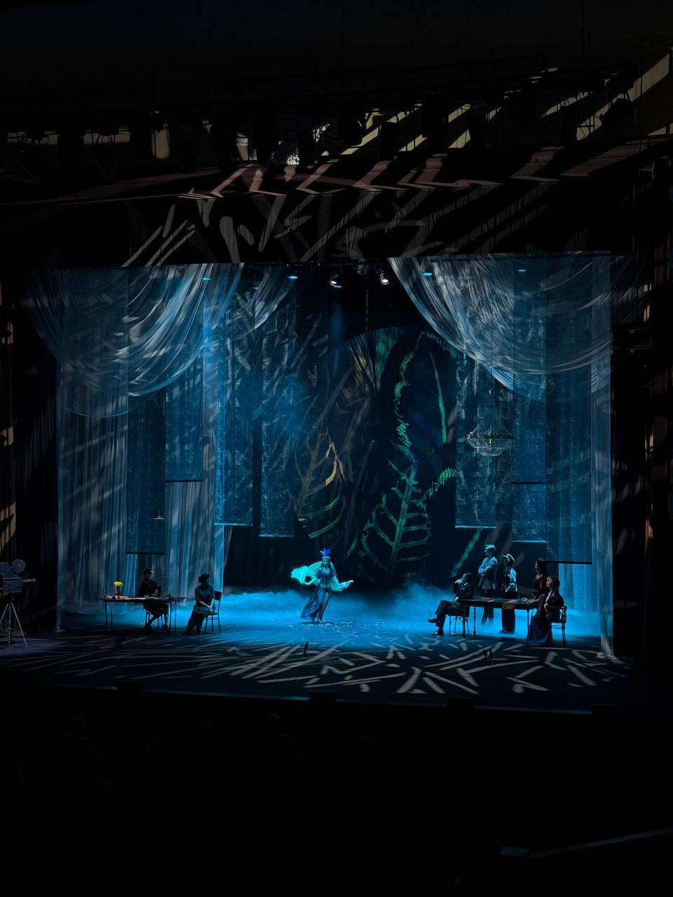
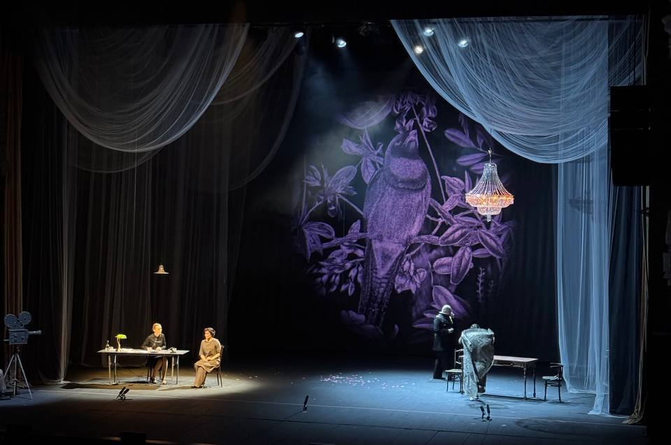
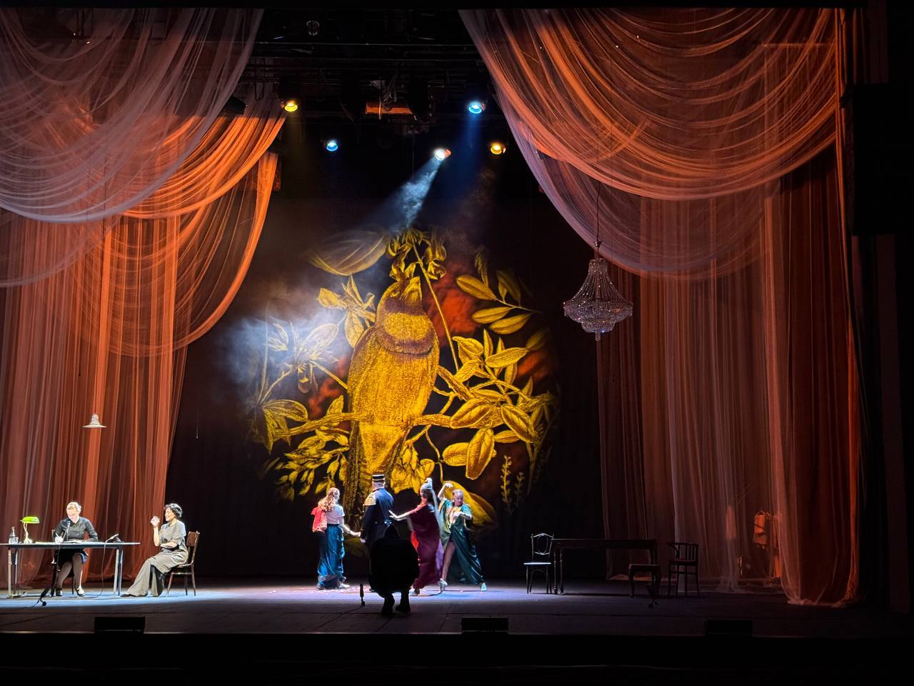
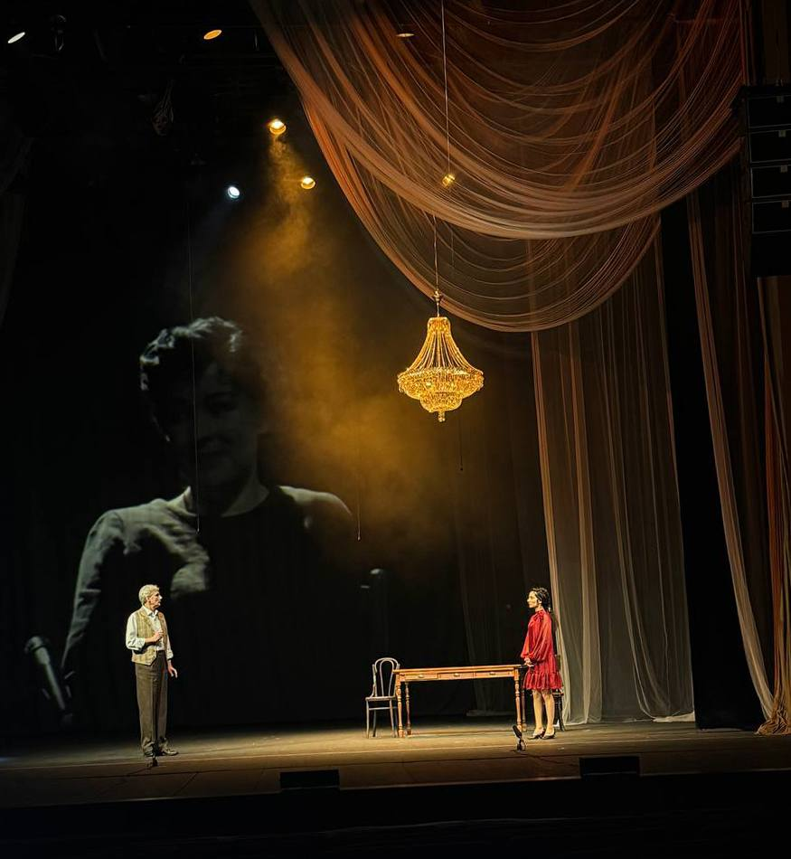
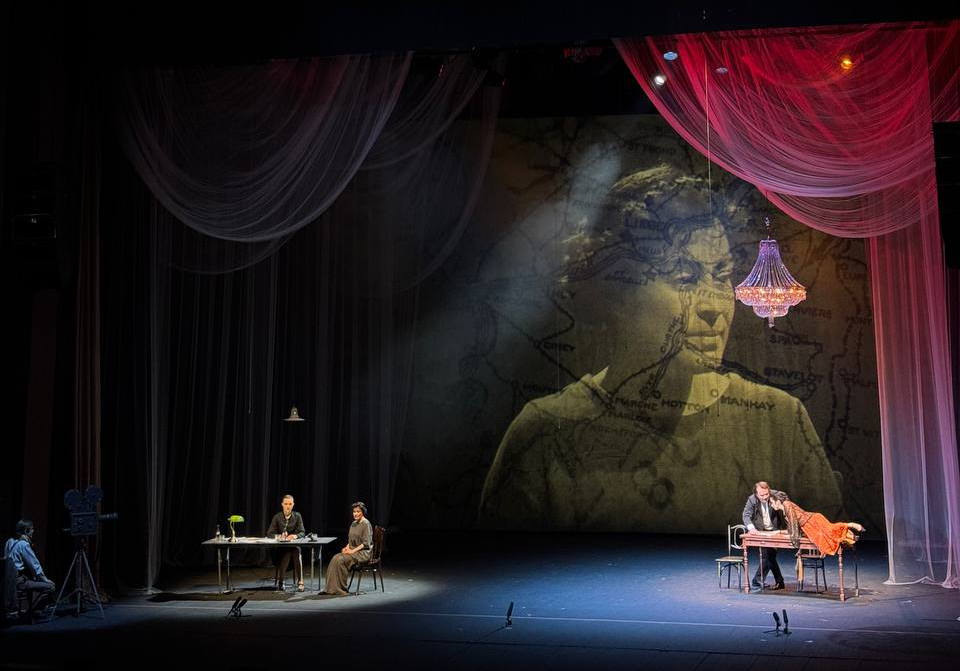

Мата-Хари
Кировский драматический театр
режиссер Вероника Вернадская
художник-постановщик Надежда Берендеева
2026
Видеохудожник
режиссер Вероника Вернадская
художник-постановщик Надежда Берендеева
2026
Видеохудожник

О проекте
Видеоконтент работает вместе с полупрозрачными тканями, светом и глубиной сцены: ботанические образы, портреты и графические слои меняют характер пространства.
Страница проекта ↗Фрагмент видеоконтентаkk_kitkate
Фрагмент видеоконтентаkk_kitkate
Фрагмент видеоконтентаkk_kitkate





Кировский драматический театр · 2026
Все проекты →